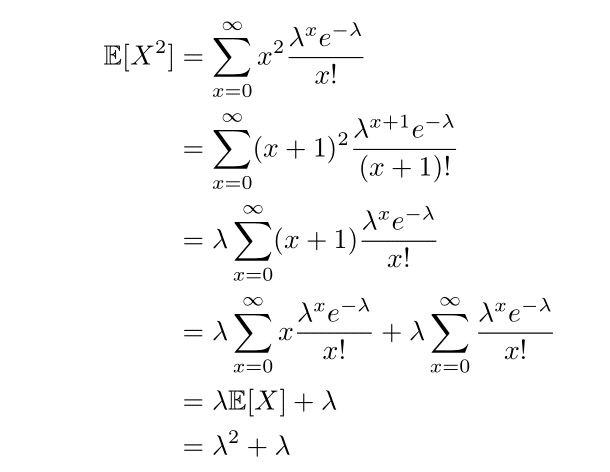

structure: put the answers and codes for the same question together
comment your codes
create tables for your data frame when it has many columns - use kable from knitr!
library(knitr)grade_book <-data.frame(first_names=randomNames(288,which.names ="first"), last_names=randomNames(288,which.names ="last"), lab_groups=rep(1:16,times=18) # 16 groups of 18 students each) kable(head(grade_book))
first_names
last_names
lab_groups
Vincent
Palmer
1
Cynthia
Edwards
2
Andrea
Jonas
3
Darrell
Joy
4
Avery
Mcdowall
5
Joshua
Wardle
6
2. Exercises in R Markdown
Your turn!
Please attempt these questions and write down your answers in the R Mardown workbook.
Run your codes in your workbook and compare your results with your deskmate.
Knit your workbook to publish a report in PDF or html.
2.1 Inserting images
Include the pictures in R markdown with the following code, {width=50%}.
Exercise: Insert a image of your choice to the workbook.
A picture of Squirrel
2.2 Mathematics inside RMarkdown
The mathematical typesetting is based on LaTeX. Below are some common LaTex syntax examples. A more comprehensive summary can be found on this page.
Subscript \(X_{i}\): $X_{i}$
Superscript \(X^{i}\): $X^{i}$
Sum \(\sum_{i=1}^{n} X_{i}\): $\sum_{i=1}^{n} X_{i}$
Exercise: Type out the following equation in LaTex:

Second moment of Poisson
3. Survey Sampling
3.1 Data Generation
Suppose we have test scores for a population of 1000 students, expressed as percentages, generated from a \(\text{Beta}(2,5)\) distribution. Create a data frame to store the names and scores of these students. Calculate the population mean and variance, and plot a histogram to visualize the distribution of the test scores.
3.2 Mean Calculation:
Suppose that we only have access to a sample of 100 scores (with replacement). Please generate this sample and calculate its mean to estimate the population mean. Compute the bias of this estimator.
3.3 Simulation Analysis: with replacement vs without replacement
Suppose that we can repeat the survey process through 100,000 simulations, each sampling 100 students with replacement. Calculate the sample mean for each of the 100,000 simulations.
Check the mean, bias, and variance of the sample means.
Plot a histogram of sample means. Compare the sample mean to a normal distribution using a Q-Q plot.
Suppose we sample without replacement from the 100,000 simulations. Estimate the expectation, bias, and variance of the estimators. What did you learn about these quantities in your lectures? Type up the theoretical expressions of them with LaTex.
3.4 Assigning groups
The survey is conducted by two volunteer groups, 1 and 2, after we have randomly assigned students to these groups. A student is assigned to group 1 with probability \(\frac{2}{3}\). Students attending the survey from group 1 receive a notebook, while those attending by group 2 receive a bottle. Create two columns to show which volunteer group conducted the survey and what gift the students received by sample() and ifelse().
3.5 Trimmed mean (optional)
The trimmed mean is a method to estimate a dataset’s central tendency by removing a specified percentage of the smallest and largest values before calculating the average of the remaining data. This technique helps reduce the impact of outliers, providing a more reliable measure of the dataset’s typical value, especially useful when data is skewed or contains extreme values. It combines the mean’s sensitivity to data changes with the median’s resistance to outliers, offering a robust tool for data analysis.
In R, we can calculate the trimmed mean via
sample <- pop[sample(nrow(pop), size=100,replace=TRUE),]trim_means <-mean(sample$scores, trim=0.2) # trim the smallest 10% and largest 10% before calculating the mean.
Assume that our sampled data is contaminated with outliers: some students did not report their true score - a random selection of 5 student reported that their score is 1 regardless of their true score. Please include this contamination, and compare the mean and trimmed mean of your sample.